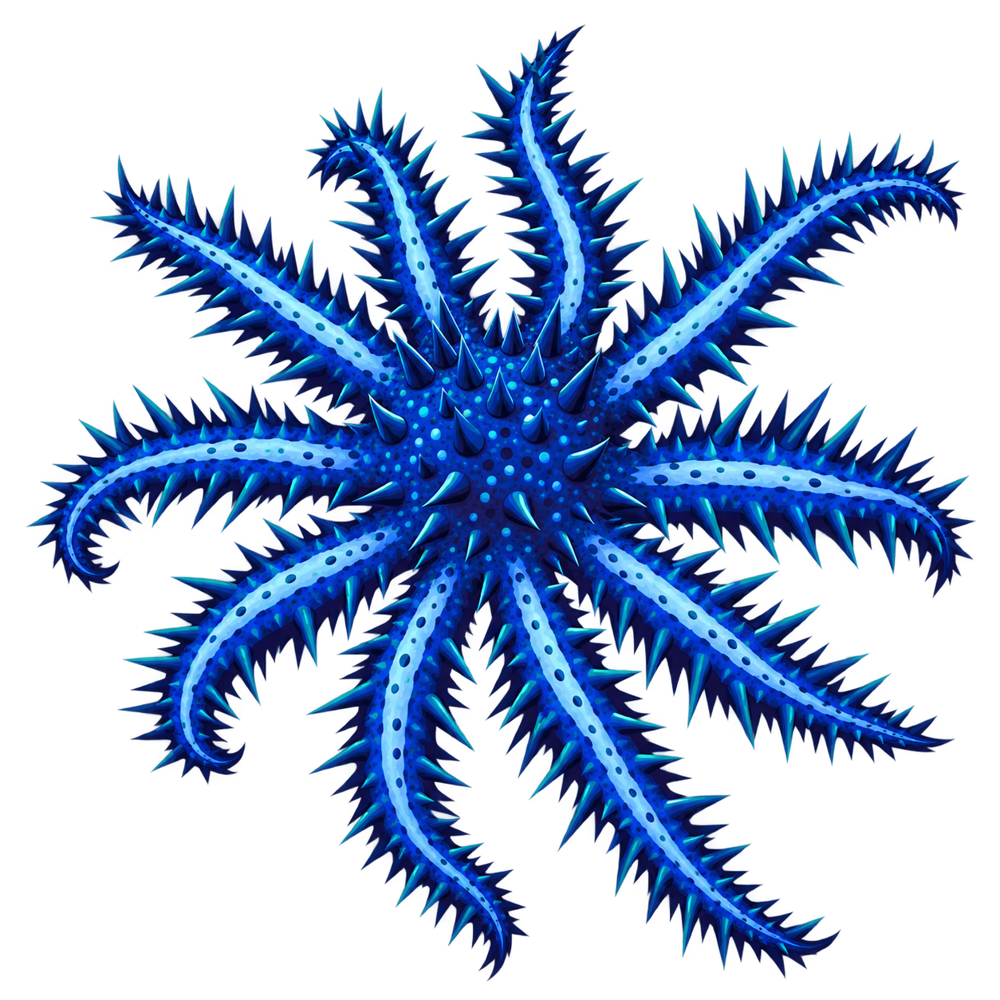
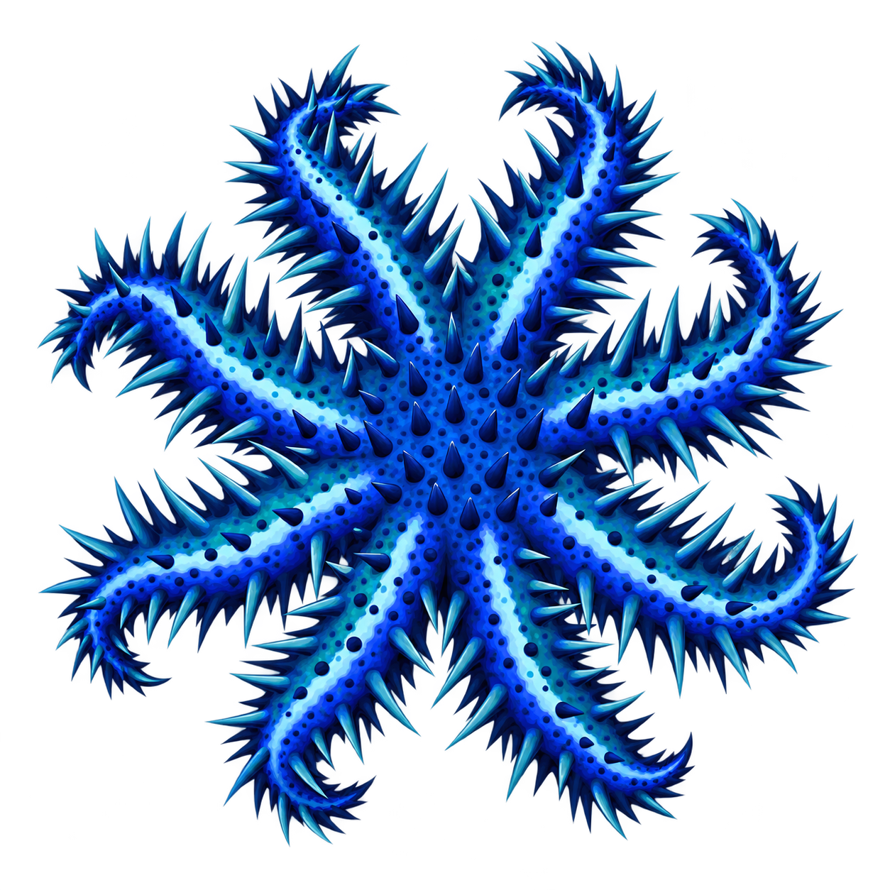
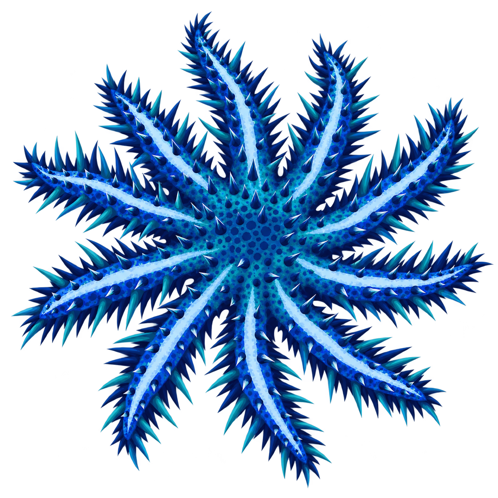
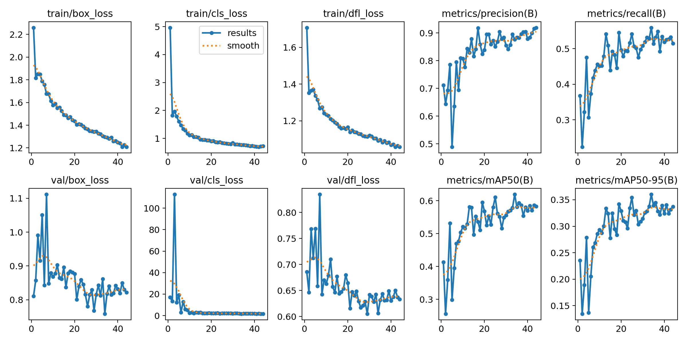
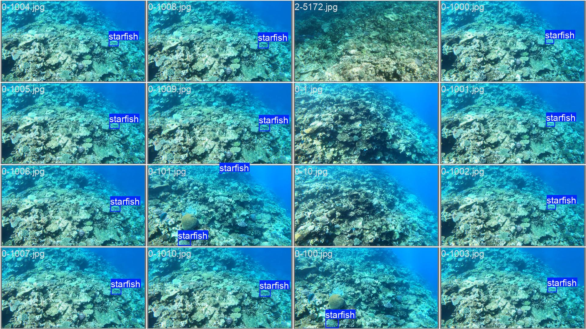
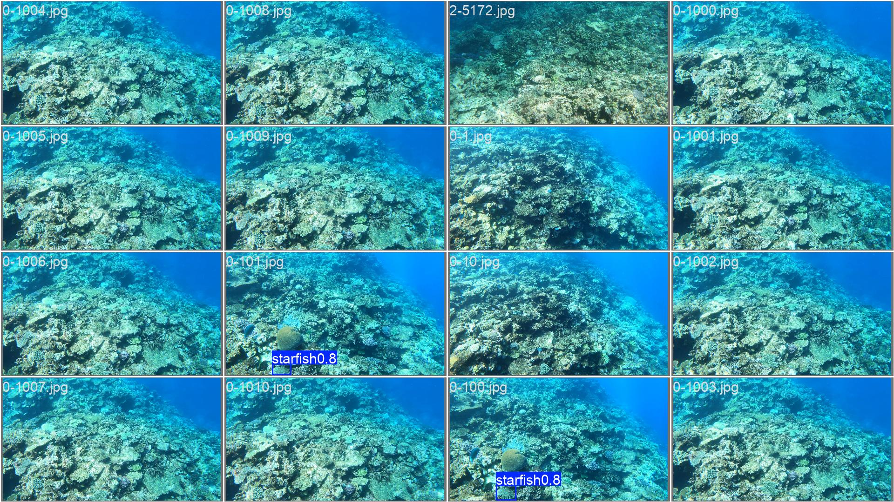

A YOLO-based detection pipeline trained to spot a coral-eating predator across three dive videos — built, broken, and rebuilt over an 11-day sprint.
YOLO11s · 1280px · trained to epoch 44, early‑stopped from patience‑10
Crown-of-thorns starfish overpopulate and strip reefs bare. Researchers need a way to count them automatically from underwater survey footage — which means finding a small, often camouflaged animal in frames that are, overwhelmingly, just water and coral.
Split independently within each video, at the sequence level — every video represented in both sides, no adjacent-frame leakage.
Raw annotations arrive as COCO-style pixel boxes. Every frame is converted to normalized YOLO format — and because nearly 80% of frames are empty, how many of those we keep turned out to matter more than almost anything else.
| Ratio kept | mAP50 | Gain |
|---|---|---|
| 0.0 (positives only) | 0.0084 | baseline |
| 1.0 | 0.0205 | +2.4× |
| 2.0 | 0.0495 | +5.9× |
| all negatives | 0.0600 | +7.1× |
Before investing in a heavier architecture, a fast, deliberately unambitious model to establish a floor — and confirm the pipeline actually works end to end.
Deliberately low — 320px is too coarse to resolve small, camouflaged starfish. This is the floor the final model needed to clear.
Two changes drove the real gains: more resolution to resolve small targets, and enough training time for the model to actually converge.

Loss and metric curves across 44 epochs — box/cls/dfl loss, precision, recall, mAP50, mAP50‑95
The headline number is strong. The interesting story is underneath it — this model is cautious, not comprehensive.

Ground truth — validation batch 2

Model predictions on the same batch
This Kaggle competition scores submissions on F2, not mAP — the metric that actually matters for comparison. F2 weighs recall four times more heavily than precision, reflecting that missing a real starfish is a costlier mistake than a false alarm.
The F1-optimal confidence threshold sits at conf = 0.102 — well below YOLO’s default of 0.25. Inference is run at this threshold rather than the default, or a meaningful share of correct low-confidence detections get silently discarded.
Upload a reef photo and the model — running live in your browser, no server involved — will draw a box around anything it thinks is a crown-of-thorns starfish.